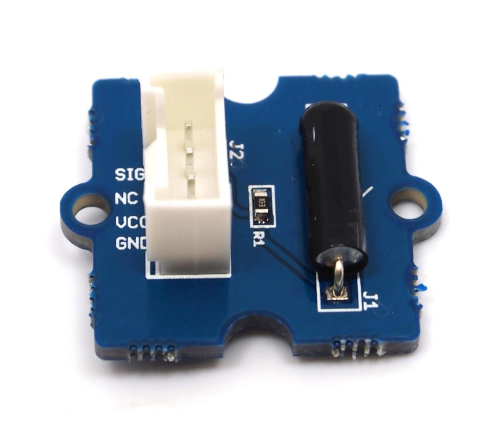
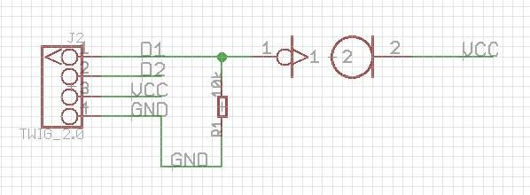
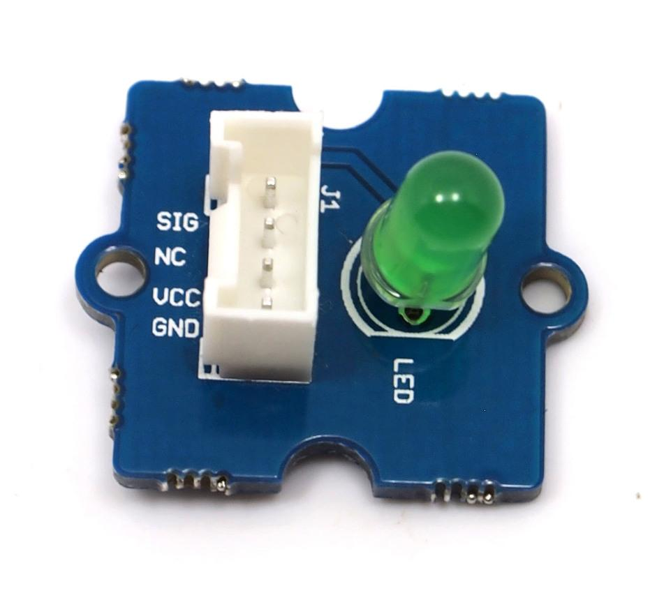
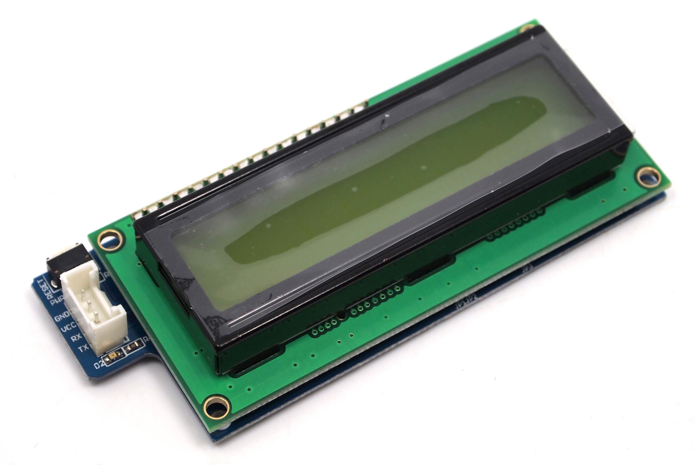

The Grove system is a modular, safe and easy to use group of items that allow you to minimise the effort required to get started with microcontroller-based experimentation and learning. Although there are many choices available for microcontroller development environments, the Grove system will work very well with the Arduino system.
First we start with the Grove base shield board. Grove - Base Shield is the new version of Electronic Brick Shield.The Basic Shield is compatible with Seeeduino v2.21 (168p and 328p), and Arduino UNO and Duemilanove. We standardize all the connectors into 4 pins(Signal 1, Signal 2, VCC and GND) 2mm connectors, which simplify the wiring of electronics projects. The 4pins buckled connectors also make the wiring situation more stable. We build all kinds of Twigs to match up with Stem, so you don't need to worry about the compatibleness between Grove - Base Shield and your existing Electronic Bricks.We have many kinks of converter cables(still increasing) to deal with the the compatibleness.This is very similar in fashion to an Arduino shield board, and in fact is used as such with our Seeeduino or Mega board.In v1.0b, we move in the analog connectors a little so that it will fit the higher power connector and USB connector. Here is a top-down view:

The purpose of the Grove - base shield is to allow easy connection of any microprocessor input and output pins to the small units. Each socket is clearly labelled with its matching I/O pin. For a more detailed examination of the Base Shield, please consider the following diagram:

For those working with Seeeduino or Arduino boards, the layout should be quite familiar. The labels on the "Power" header pins may be confusing - the new Arduino Uno has two ground pins between the Vin and 5v, and label "GND" twice, but the Grove labels match the Duemilanove which label "GND" once, wider, to indicate both pins.
There is one small thing to take note of when connecting to analog or digital sockets. Each socket contains 5V, GND, and two I/O pin connections:

When using the digital I/O, note the staggered alignment of the pins – that is, one socket handles D1 and D2, the next D2 and D3, and so on. If you are going to use an input the small unit and an output Unit which have two signal pins simultaneously (now the starter bundle v1.0b doesn't have two signal pins Grove module), separate your wires so that a socket is between them as such:

Wires for two signal Grove modules cannot sit side-by-side on the Base board because one pin (such as D2) will be multi-using. Or, if two Grove modules only use one digital pin, such as the tilt-switch and the piezo, they can sit together on the Base board as they only use one of the digital lines in the connecting wire and therefore will not interfere with each other. It is the same as the Analog I/O sockets. Make sure you know the silkscreen of each socket before you start wiring.

This is a simple yet enjoyable Grove to use. The piezo can be connected to digital outputs, and will emit a tone when the output is high. Alternatively it can be connected to an analog pulse-width modulation output to generate various tones and effects.
Buzzer Twig Schematic


This new version of button Grove module contains one independent button, which are configured with pull-down resistor – ready for use with our microcontrollers as digital input. The button signals the SIG wire,NC is not used on this Grove module.
ButtonSchematic


The tilt-switch Grove is the equivalent of a button, and is used as a digital input. When the switch is level it is open, and when tilted, the switch closes. It is wired to the SIG line, NC is not used on this Grove. There's a surface-mount resistor .
Tilt-switch Twig Schematic


This Grove allows you to add your own circuitry or components to your Grove system prototypes. This allows you access to all four lines from the connector cable – S0, S1, VCC and GND. There is also an extra normally-open button to take advantage of. The hole spacing makes using normal DIP-format ICs and other components very simple. You may wish to purchase more for future use in advance.

This new version of LED Grove consists of one green LED. It operates from 5V DC. Perfect for use on Seeeduino digital outputs, or also can be controlled using pulse-width modulation. Each LED has a current-limiting resistor, which protects the LED and the Arduino from high current.
LED Twig Schematic


The potentiometer Grove produces analog output between 0 and Vcc (5V DC with Seeeduino) on its D1 connector. The D2 connector is not used. The angular range is 300 degrees with a linear change in value. The resistance value is 10k ohms, perfect for Arduino use. This may also be known as a “rotary angle sensor”.
Potentiometer Schematic


The temperature sensor Grove uses a thermistor which returns the ambient temperature in the form of a resistance value, which is then used to alter Vcc (5V with our Seeeduinos). Our board then converts this voltage value measured by an analog input pin to a temperature. The operating range is -40 to 125 degrees Celsius, with an accuracy of ±1.5ºC.
As the temperature increases, the resistance value of the sensor decreases:

Although the calculation of the actual temperature can seem quite complex, it is simple to execute. For an example of how this is done, please refer to project seven described later in this guide.
Temperature Sensor Twig Schematic


The relay Grove is a digital normally-open switch that controls a relay capable of switching much higher voltages and currents than your normal Seeeduino boards. When set to HIGH the LED will light, and the relay will close allowing current to flow. The peak voltage capability is 250V at 10 amps.
Please exercise great care when working with mains voltages – if in doubt contact a professional such as a licensed electrician for help.
Relay Schematic


This consists of two parts, a module holding an 16 character by 2 line LCD, and the Grove itself(most may receive the two-units-soldered together-version). The LCD has an interface that is easily used under the Arduino IDE using the special Seeedstudio SerialLCD library.
Before using your LCD Grove , download the library from: http://garden.seeedstudio.com/images/1/19/SerialLCD-Library.zip ,or click Seeedstudio SerialLCD library. Then extract the “SerialLCD-Library.zip” folder and copy it into your Arduino libraries folder, usually located at ..\Arduino-xx\libraries.
Please see project six described later on in this guide.For a detailed information on how to use your Serial LCD Grove ,you can go to Twig - Serial LCD page,there are plenty of examples.
Note: when you have connected Serial LCD to Base Shield and downloaded the example to the Seeeduino/Arduino, make sure you reset the Seeeduino/Arduino first, then push the Serial LCD's reset button.
Here is how to assemble Starter Bundle with Starter bundle harness.
http://www.seeedstudio.com/depot/images/product/sbundle01_03.jpg
For more information you can go to Starter bundle harness.
Now you should be familiar with your Base Shield and Grove modules, so let's examine them in more detail with the following projects:
They are written for use with the Arduino environment. All of the following projects can be made with only a Seeeduino board and the Grove starter bundle. If you have not already done so, download and install the latest version of the Arduino IDE from: http://arduino.cc/en/Main/Software.
Furthermore, if you are using a Seeeduino or Seeeduino Mega, make sure you have the switches set to 5V and auto, as such:

This ensures the board is running at 5V DC from the USB cable, and that the board will auto-reset upon uploading your sketch. Otherwise you will have to manually reset your Seeeduino before the sketch starts operation.
By now we hope you have enjoyed experimenting with your Seeeduino and the Grove starter bundle. You will find it simple and convenient to use this system to develop your ideas and prototypes. For technical support please email info@seeedi.com.
In the meanwhile, don't forget to regularly check the Seeedstudio Bazaar website for new Grove modules and other interesting and useful products at: http://seeedstudio.com/depot/
| Revision | Descriptions | Release Date |
| GROVE Starter Bundle v1.0b | draft release | Dec 31, 2010 |
This documentation is licensed under the Creative Commons Attribution-ShareAlike License 3.0 Source code and libraries are licensed under GPL/LGPL, see source code files for details.
Copyright (c) 2008-2016 Seeed Development Limited (www.seeedstudio.com / www.seeed.cc){kind=link}